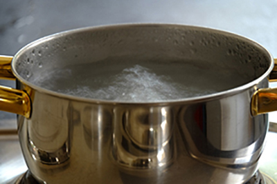

State Change: Evaporation and Melting
What is Evaporation? Say
you are heating a pot of water on the stove (shown below).
Thermal energy is produced in the chemical reaction of burning natural gas (which is mostly methane). This reaction produces high-energy (or very fast-moving!) CO2 and H2O molecules.
These molecules hit the metal molecules that make up the pot. As a result, the molecules of the pot start vibrating faster. Thermal energy is then transferred between the pot's molecules and from the pot's molecules to nearby water molecules. This causes the water molecules to move around
faster and faster. The water's temperature is increasing.

Soon, some water molecules move fast enough to overcome the
pull from electric
forces
of other water molecules around them. They also have to overcome
the electric forces of the water molecules at the surface. When they are moving fast enough, the water molecules
leave the pot and move into the air. This is what we know as evaporation.
When a liquid like water evaporates, the molecules themselves do not change when they move from the pot into
the air. They are still H2O molecules (two hydrogen
atoms and one oxygen atom); this is a physical reaction.
Analogies for Evaporation. Evaporation is similar to a rocket blasting off and escaping from the Earth's
gravitational field. Rockets need to have enough speed to overcome the pull of gravity and escape from the Earth's
atmosphere. To escape into the air (or evaporate), water molecules need to have enough speed to overcome the electric
forces of other H2O molecules within the liquid water and especially at the surface of the
water (where H2O molecules are even more strongly bonded together).
Another analogy for evaporation is rolling a magnetic steel ball on a table past a magnet. If you roll the ball
slowly, the ball will get "caught" in the magnetic field and "stick" to the magnet. But if you roll the ball faster,
it will have enough speed to overcome the magnetic attraction and move past the magnet. This is why H2O molecules that are moving around faster are more likely to evaporate. They can "escape"
from the electric forces of the other H2O molecules.
Evaporation of salt water. In the unit
on dissolving, we talked about how salt (and also sugar) dissolve in water. But what happens
when salt water evaporates? Let's say we have a glass of salt water sitting on a window sill. We forget about it
and discover it several weeks later. What will we find?
Most likely, most (if not all) of the water will have evaporated. This happens because eventually, individual water molecules will gain enough kinetic energy (from the sun or surrounding air) to evaporate. But the originally dissolved salt (NaCl) will not evaporate with the water molecules. Why not?
Most likely, most (if not all) of the water will have evaporated. This happens because eventually, individual water molecules will gain enough kinetic energy (from the sun or surrounding air) to evaporate. But the originally dissolved salt (NaCl) will not evaporate with the water molecules. Why not?
One reason that the NaCl molecules will not evaporate even though H2O molecules do is because they are much heavier than H2O molecules. If we look at the Periodic Table of Elements, we see that the atomic mass of Na is 23 "atomic
mass units" or amu. And Cl is about 35 amu.
In H2O, there are two H atoms. Each H atom is only 1 amu. There is one O atom, which is 16 amu.
Because NaCl molecules are heavier, they are pulled downward by the Earth's gravity more strongly than H2O molecules. So, they do not escape from the glass and evaporate into the air. Below is
a photo of the inside of a glass that had water with salt dissolved in it. This photo was taken after all the water
evaporated (about three weeks later). The salt had formed hard crystals along the inside of the glass as the water
evaporated.